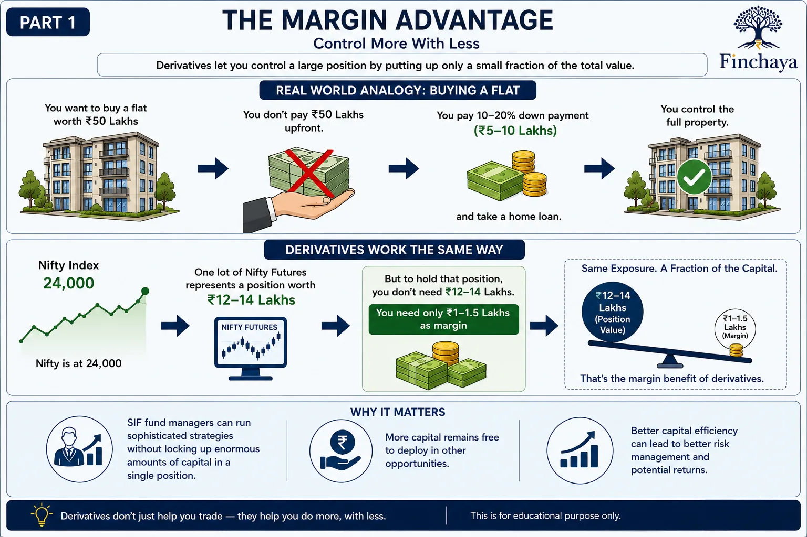
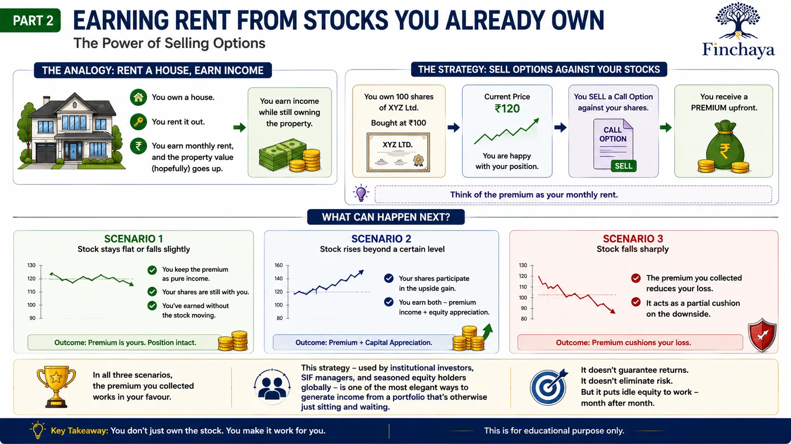

How Derivatives Give You More Power With Less Capital — And How Selling Options Can Generate Passive Income
Most people think derivatives are only for speculators.
What if I told you they can actually make your investments safer — and even generate monthly income from stocks you already own?
Let me explain with two simple ideas.
Part 1: The Margin Advantage — Control More With Less
Imagine you want to buy a flat worth ₹50 lakhs.
You don't pay ₹50 lakhs upfront. You pay a 10–20% down payment, take a home loan, and control the full property.
Derivatives work on a similar principle.
Instead of paying the full value of a stock or index position, you put up a fraction of it as margin — and control the full exposure.
Example: Nifty is at 24,000. One lot of Nifty futures represents a position worth roughly ₹12–14 lakhs. But to hold that position, you don't need ₹14 lakhs. You need approximately ₹1–1.5 lakhs as margin.
Same exposure. A fraction of the capital. That's the margin benefit of derivatives.

This is why SIF fund managers can run sophisticated strategies without locking up enormous amounts of capital in a single position — freeing up the rest to deploy elsewhere.
Part 2: Earning Rent From Stocks You Already Own
Now here's the part most retail investors never hear about.
If you own a house, you can rent it out — earn monthly income — while still owning the property. If the property value goes up, that gain is still yours.
You can do something remarkably similar with stocks you own.
Here's the idea: Imagine you hold shares of a company — let's say you bought them at ₹100. The stock is currently at ₹120. You're happy with your position.
Now, instead of just sitting on those shares and waiting — you can "rent out" your shares by selling an option contract against them. In exchange, someone pays you a premium upfront. Think of that premium as your monthly rent.
What happens next?
Scenario 1 — Stock stays flat or falls slightly: You keep the premium as pure income. Your shares are still with you. You've earned without the stock moving.
Scenario 2 — Stock rises beyond a certain level: Your shares participate in that upside gain. You've earned both — the premium income and the equity appreciation.
Scenario 3 — Stock falls sharply: The premium you collected reduces your loss. It acts as a partial cushion on the downside.
In all three scenarios, the premium you collected works in your favour.

This strategy — used by institutional investors, SIF managers, and seasoned equity holders globally — is one of the most elegant ways to generate income from a portfolio that's otherwise just sitting and waiting.
It doesn't guarantee returns. It doesn't eliminate risk. But it puts idle equity to work — month after month.
Mutual Fund investments are subject to market risks. Read all scheme-related documents carefully. This post is for educational purposes only and does not constitute investment advice. Options and derivatives involve significant risk and may not be suitable for all investors.